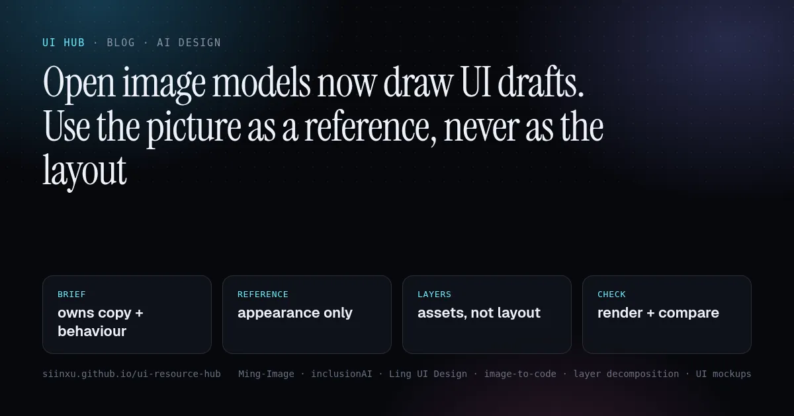
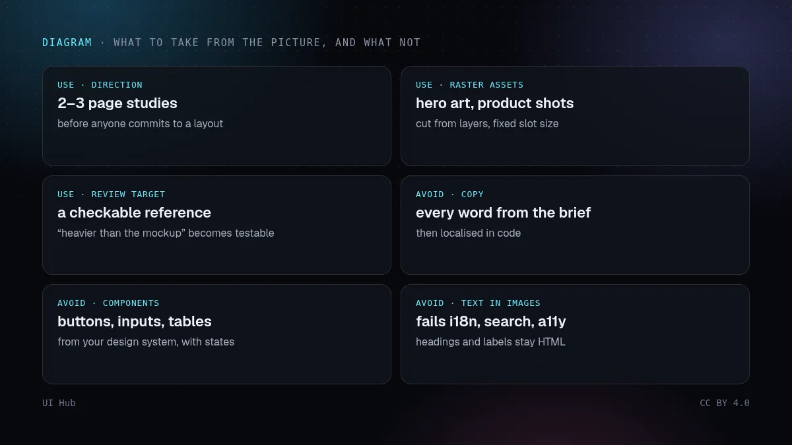

Open image models now draw UI drafts. Use the picture as a reference, never as the layoutオープンな画像モデルがUIの下絵を描く時代に：画像は参考にして、レイアウトにはしない오픈 이미지 모델이 UI 시안을 그리기 시작했다: 그림은 참고로만, 레이아웃으로 쓰지 말 것Model imej terbuka kini melukis draf UI. Guna gambar sebagai rujukan, jangan sebagai susun aturMô hình ảnh mã nguồn mở giờ đã vẽ được bản nháp UI. Hãy dùng ảnh làm tham chiếu, đừng dùng làm bố cụcLes modèles d’image ouverts dessinent désormais des maquettes d’UI. L’image sert de référence, jamais de mise en pageLos modelos de imagen abiertos ya dibujan bocetos de UI. Usa la imagen como referencia, nunca como maquetaciónOffene Bildmodelle zeichnen jetzt UI-Entwürfe. Nutzen Sie das Bild als Referenz, nie als Layout
Ant Group’s inclusionAI open-sourced Ming-Image-0.2-Design this week, an MIT-licensed 6B image model aimed at UI drafts, hero images and posters, which the team says now leads open-weight models on a public text-to-image leaderboard. A picture of a screen is a tempting handoff and a bad one: the copy is invented, the text is pixels and nothing has states. The companion Ling UI Design skill shows the discipline that makes it useful: the brief owns copy and behaviour, the image only guides appearance, layers become assets rather than layout, and every build is rendered and compared. What to copy, where image models help in UI work and where they do not, a checklist and a prompt.Ant GroupのinclusionAIが今週、UIの下絵、ヒーロー画像、ポスター向けの6B画像モデルMing-Image-0.2-DesignをMITライセンスで公開した。チームによれば、公開のテキスト画像生成ランキングでオープンウェイトのモデルとして首位だという。画面の画像をそのまま開発に渡すのは魅力的だが悪い引き継ぎだ。文言は作り話で、文字はピクセルで、状態は何もない。付属のLing UI Designスキルは使いこなすための規律を示している。文言と挙動はブリーフが決め、画像は見た目だけを導き、レイヤーはレイアウトではなく素材になり、ビルドのたびにレンダリングして比べる。真似すべき点、UI制作で画像モデルが役立つ所と役立たない所、チェックリストとプロンプト付き。앤트그룹 inclusionAI가 이번 주 UI 시안, 히어로 이미지, 포스터용 6B 이미지 모델 Ming-Image-0.2-Design을 MIT 라이선스로 공개했다. 팀은 공개 텍스트-이미지 리더보드에서 오픈 웨이트 모델 중 1위라고 밝혔다. 화면 그림을 개발에 그대로 넘기는 것은 솔깃하지만 나쁜 인계다. 문구는 지어낸 것이고, 텍스트는 픽셀이며, 상태는 하나도 없다. 함께 나온 Ling UI Design 스킬은 이를 쓸모 있게 만드는 규율을 보여 준다. 문구와 동작은 브리프가 정하고, 이미지는 외형만 안내하며, 레이어는 레이아웃이 아니라 에셋이 되고, 빌드할 때마다 렌더링해 비교한다. 따라 할 점, UI 작업에서 이미지 모델이 도움이 되는 곳과 아닌 곳, 체크리스트와 프롬프트 포함.inclusionAI dari Ant Group membuka sumber Ming-Image-0.2-Design minggu ini, model imej 6B berlesen MIT untuk draf UI, imej hero dan poster, yang menurut pasukannya kini mendahului model berpemberat terbuka dalam satu papan pendahulu teks-ke-imej awam. Gambar skrin ialah serahan yang menggoda tetapi buruk: teksnya direka, tulisannya piksel dan tiada keadaan langsung. Kemahiran Ling UI Design yang menyertainya menunjukkan disiplin yang menjadikannya berguna: taklimat menentukan teks dan tingkah laku, imej hanya memandu rupa, lapisan menjadi aset dan bukan susun atur, dan setiap binaan dirender lalu dibandingkan. Apa yang patut ditiru, di mana model imej membantu kerja UI dan di mana tidak, senarai semak dan prompt.Tuần này inclusionAI của Ant Group mở mã nguồn Ming-Image-0.2-Design, mô hình ảnh 6B giấy phép MIT dành cho bản nháp UI, ảnh hero và poster, và nhóm cho biết nó đang dẫn đầu các mô hình trọng số mở trên một bảng xếp hạng text-to-image công khai. Một bức ảnh màn hình là cách bàn giao hấp dẫn nhưng tệ: nội dung chữ là bịa, chữ là pixel và chẳng có trạng thái nào. Skill Ling UI Design đi kèm cho thấy kỷ luật giúp nó hữu ích: brief quyết định nội dung và hành vi, ảnh chỉ định hướng vẻ ngoài, các lớp tách ra thành tài nguyên chứ không phải bố cục, và mỗi bản build đều được render rồi so sánh. Những gì nên học theo, chỗ mô hình ảnh giúp ích trong việc làm UI và chỗ không, kèm checklist và prompt.inclusionAI, chez Ant Group, a ouvert cette semaine Ming-Image-0.2-Design, un modèle d’image de 6 milliards de paramètres sous licence MIT, conçu pour les maquettes d’UI, les visuels hero et les affiches ; l’équipe affirme qu’il mène les modèles à poids ouverts d’un classement public texte-vers-image. Une image d’écran est un livrable tentant et mauvais : le texte est inventé, les lettres sont des pixels et aucun état n’existe. Le skill Ling UI Design qui l’accompagne montre la discipline qui le rend utile : le brief fixe les textes et le comportement, l’image guide seulement l’apparence, les calques deviennent des ressources et non une mise en page, et chaque build est rendu puis comparé. Ce qu’il faut copier, où les modèles d’image aident en UI et où non, une checklist et un prompt.inclusionAI, de Ant Group, liberó esta semana Ming-Image-0.2-Design, un modelo de imagen de 6B con licencia MIT pensado para bocetos de UI, imágenes hero y pósteres, que según el equipo lidera los modelos de pesos abiertos en una clasificación pública de texto a imagen. Una imagen de pantalla es una entrega tentadora y mala: el texto es inventado, las letras son píxeles y no hay ningún estado. El skill Ling UI Design que lo acompaña muestra la disciplina que lo vuelve útil: el brief manda en textos y comportamiento, la imagen solo guía la apariencia, las capas se convierten en recursos y no en maquetación, y cada build se renderiza y se compara. Qué copiar, dónde ayudan los modelos de imagen en UI y dónde no, una checklist y un prompt.inclusionAI von der Ant Group hat diese Woche Ming-Image-0.2-Design als Open Source veröffentlicht, ein MIT-lizenziertes 6B-Bildmodell für UI-Entwürfe, Hero-Bilder und Poster, das laut Team ein öffentliches Text-zu-Bild-Ranking unter den Open-Weight-Modellen anführt. Ein Bild eines Screens ist eine verlockende und schlechte Übergabe: Der Text ist erfunden, die Schrift besteht aus Pixeln, und es gibt keine Zustände. Der begleitende Skill Ling UI Design zeigt die Disziplin, die es nützlich macht: Das Briefing bestimmt Texte und Verhalten, das Bild lenkt nur die Optik, Ebenen werden zu Assets statt zu Layout, und jeder Build wird gerendert und verglichen. Was sich übernehmen lässt, wo Bildmodelle in der UI-Arbeit helfen und wo nicht, eine Checkliste und ein Prompt.

本文は英語で表示しています。
본문은 영어로 표시됩니다.
Kandungan dipaparkan dalam bahasa Inggeris.
Nội dung hiển thị bằng tiếng Anh.
Le corps de l’article est en anglais.
El cuerpo del artículo está en inglés.
Der Beitragstext ist auf Englisch.
On 25 November inclusionAI, Ant Group’s open model team, put the weights of Ming-Image-0.2-Design on Hugging Face and announced it a day later. It is a 6-billion-parameter diffusion transformer under the MIT licence, built for the pictures designers are asked for most: e-commerce hero images, posters, spatial renderings and UI design drafts. The model card says it handles complex composition, lighting and in-image text better than the 0.1 release from September, and inclusionAI reports that on 25 November it ranked first among open-weight models on Artificial Analysis’s text-to-image leaderboard (AA-Image-T2I v2.1, 1,095 Elo, ahead of FLUX.2 [max] and Qwen-Image-2.0 in the team’s own chart). That ranking is the maker’s claim, and leaderboards move weekly, so read it as “good enough to try”, not “best”.

The interesting part for UI work is not the leaderboard. It is that the release ships with a way of working: a structured prompt format, a model that splits a flat design into layers, and an MIT-licensed agent skill, Ling UI Design, that turns a generated or supplied screen image into real front-end code. Read together, they are a clear answer to a question every team using image models for interfaces runs into: what is the picture actually for?
What shipped, in practical terms
The model. Defaults are 2048 × 2048 output, 12 sampling steps and CFG 1.0, with 2K buckets for 16:9, 4:3 and 2:3. inclusionAI validated it on a single CUDA GPU with 80 GB of memory in BF16, served through vLLM-Omni, so most teams will reach it through a hosted API rather than a laptop. The prompt format. Plain sentences work, but the team recommends a Figma-style JSON caption: canvas_settings (aspect ratio, lighting, style) plus a list of layers from back to front, each with a description, coordinates, its relation to other layers and hex colours. Any text to render is quoted verbatim, once. The layer model. Ming-Image-0.1-Design-Layer turns a flattened design into separate transparent PNG layers; inclusionAI says a finer version is due next week. The skill. Ling UI Design wires the image model and the layer model into a coding agent, with a default 4-layer split into text, image, container and background.
The workflow worth copying
- The brief comes first and stays in charge. The agent reads the repository, the brief, the required views and the target viewports before any image is made, and keeps the existing stack.
- Get one usable reference. Either the person supplies screenshots, or the agent generates a page image in a chosen visual direction. It retries only for structural defects such as the wrong page type, a collapsed layout or the wrong mood, names the defect each time, and stops after three attempts. Wrong copy or a missing section is not a reason to regenerate: those get fixed in code from the brief.
- Turn the image into assets, not layout. Decompose once, crop candidate assets, inspect every one, and record each material raster region as accepted, refined, generated or omitted. An unresolved region blocks the build. A gradient, a flat fill, an emoji or the whole screenshot is never allowed to stand in for a real asset.
- Write down the layout before writing code. Region order, column proportions, spacing, heading wraps, type scale and colours go into a short checklist, then text, controls, layout and simple icons are built in code.
- Render, compare, fix the biggest mismatch, repeat. Capture the requested viewports, fix the largest structural, asset, type, overflow or interaction difference, and capture again, with a ceiling of five cycles so polishing does not run forever.

Why a picture of a screen is a bad handoff
A generated screen looks finished, which is exactly the problem. Its copy was invented by the model, its text is pixels that a screen reader cannot read and a translator cannot change, its spacing is approximate rather than on your scale, and it shows one state of a component that in real life has hover, focus, loading, empty and error states. Traced pixel for pixel, it also locks in the model’s defaults: the centred hero, the three soft cards, the single purple button. The Ling UI Design skill guards against this with an explicit order of evidence: the brief, supplied screenshots and supplied assets first; the selected generated image second, for appearance only and never as the source of copy; a screenshot of the current build third; decomposed layers last, because they can overlap, drop content or invent hidden pixels. When two sources disagree, the higher one wins.
Our take
Image models are becoming a normal step in front-end work, and an MIT model that a team can self-host makes that step cheaper to automate. The useful shift is in what the agent is allowed to take from the picture. Taking colour, mood, density, hierarchy and real raster assets is a fast way past the blank page. Taking copy, structure for screen readers, component behaviour or the exact layout is how AI-flavoured, inaccessible pages get shipped. Put that boundary in writing, in the skill or in AGENTS.md, and give the agent hard stopping rules, because “regenerate until it looks right” is the most expensive loop in the workflow.
Where image models help in UI work, and where they do not
- Use them for direction: two or three mood boards or page studies before anyone commits to a layout. Figma’s image tools added multi-model, multi-image generation on 18 November for the same reason.
- Use them for raster assets: hero art, product shots, illustrations and empty-state pictures, cut out from layers and saved at a defined slot size.
- Use them as a review target: a reference makes “the hero feels heavier than the mockup” a checkable statement.
- Do not use them for copy: every word on the page comes from the brief or a writer, then is localised in code.
- Do not use them for components: buttons, inputs, tables and charts come from your design system with real states and real data.
- Do not ship text inside images: headings and labels in pictures fail translation, search and accessibility checks.

Reference-first UI checklist
- Is the brief, not the mockup, the source for every word on the page?
- Is the reference stored in
artifacts/and kept out of the shipped bundle? - Does every raster region on the page have an outcome: accepted, refined, generated or omitted?
- Are there zero full-screen screenshots, gradients or emoji standing in for real assets?
- Are buttons, inputs and icons real elements from your component library, with focus and disabled states?
- Was the build rendered at every target viewport and compared with the reference, in light and dark?
- Are retries capped (three for references, five for render-and-fix) and are the reasons logged?
- Are API keys read from the environment and kept out of prompts, logs and the repository?
# Paste into a coding agent, with the brief and one reference image attached
Build this page from the brief, using the image only as a visual reference.
1. Write down from the brief: every heading, label and paragraph, the views,
the target viewports (375, 768, 1440) and the components we already have.
2. From the image, take only: colours, type scale, spacing rhythm, density,
region order and column proportions. Record them in notes/reference.md.
3. List every raster region (photos, illustrations). For each one, record
accepted / cropped / generated / omitted and the slot size it will fill.
Never use the whole screenshot, a gradient or an emoji as a stand-in.
4. Build text, controls and layout in code with our components and tokens.
No copy from the image. No text inside images.
5. Render each viewport in light and dark, compare with the reference, fix
the largest mismatch, and repeat at most 5 times. Report what still differs.UI Hub related reading: layers, brand kits and JSON prompts for AI visuals, visual prompts for UI edits, comparing parallel design directions, and putting the rules of a design agent in code.
On 25 November inclusionAI, Ant Group’s open model team, put the weights of Ming-Image-0.2-Design on Hugging Face and announced it a day later. It is a 6-billion-parameter diffusion transformer under the MIT licence, built for the pictures designers are asked for most: e-commerce hero images, posters, spatial renderings and UI design drafts. The model card says it handles complex composition, lighting and in-image text better than the 0.1 release from September, and inclusionAI reports that on 25 November it ranked first among open-weight models on Artificial Analysis’s text-to-image leaderboard (AA-Image-T2I v2.1, 1,095 Elo, ahead of FLUX.2 [max] and Qwen-Image-2.0 in the team’s own chart). That ranking is the maker’s claim, and leaderboards move weekly, so read it as “good enough to try”, not “best”.
The interesting part for UI work is not the leaderboard. It is that the release ships with a way of working: a structured prompt format, a model that splits a flat design into layers, and an MIT-licensed agent skill, Ling UI Design, that turns a generated or supplied screen image into real front-end code. Read together, they are a clear answer to a question every team using image models for interfaces runs into: what is the picture actually for?
What shipped, in practical terms
The model. Defaults are 2048 × 2048 output, 12 sampling steps and CFG 1.0, with 2K buckets for 16:9, 4:3 and 2:3. inclusionAI validated it on a single CUDA GPU with 80 GB of memory in BF16, served through vLLM-Omni, so most teams will reach it through a hosted API rather than a laptop. The prompt format. Plain sentences work, but the team recommends a Figma-style JSON caption: canvas_settings (aspect ratio, lighting, style) plus a list of layers from back to front, each with a description, coordinates, its relation to other layers and hex colours. Any text to render is quoted verbatim, once. The layer model. Ming-Image-0.1-Design-Layer turns a flattened design into separate transparent PNG layers; inclusionAI says a finer version is due next week. The skill. Ling UI Design wires the image model and the layer model into a coding agent, with a default 4-layer split into text, image, container and background.
The workflow worth copying
- The brief comes first and stays in charge. The agent reads the repository, the brief, the required views and the target viewports before any image is made, and keeps the existing stack.
- Get one usable reference. Either the person supplies screenshots, or the agent generates a page image in a chosen visual direction. It retries only for structural defects such as the wrong page type, a collapsed layout or the wrong mood, names the defect each time, and stops after three attempts. Wrong copy or a missing section is not a reason to regenerate: those get fixed in code from the brief.
- Turn the image into assets, not layout. Decompose once, crop candidate assets, inspect every one, and record each material raster region as accepted, refined, generated or omitted. An unresolved region blocks the build. A gradient, a flat fill, an emoji or the whole screenshot is never allowed to stand in for a real asset.
- Write down the layout before writing code. Region order, column proportions, spacing, heading wraps, type scale and colours go into a short checklist, then text, controls, layout and simple icons are built in code.
- Render, compare, fix the biggest mismatch, repeat. Capture the requested viewports, fix the largest structural, asset, type, overflow or interaction difference, and capture again, with a ceiling of five cycles so polishing does not run forever.
Why a picture of a screen is a bad handoff
A generated screen looks finished, which is exactly the problem. Its copy was invented by the model, its text is pixels that a screen reader cannot read and a translator cannot change, its spacing is approximate rather than on your scale, and it shows one state of a component that in real life has hover, focus, loading, empty and error states. Traced pixel for pixel, it also locks in the model’s defaults: the centred hero, the three soft cards, the single purple button. The Ling UI Design skill guards against this with an explicit order of evidence: the brief, supplied screenshots and supplied assets first; the selected generated image second, for appearance only and never as the source of copy; a screenshot of the current build third; decomposed layers last, because they can overlap, drop content or invent hidden pixels. When two sources disagree, the higher one wins.
Our take
Image models are becoming a normal step in front-end work, and an MIT model that a team can self-host makes that step cheaper to automate. The useful shift is in what the agent is allowed to take from the picture. Taking colour, mood, density, hierarchy and real raster assets is a fast way past the blank page. Taking copy, structure for screen readers, component behaviour or the exact layout is how AI-flavoured, inaccessible pages get shipped. Put that boundary in writing, in the skill or in AGENTS.md, and give the agent hard stopping rules, because “regenerate until it looks right” is the most expensive loop in the workflow.
Where image models help in UI work, and where they do not
- Use them for direction: two or three mood boards or page studies before anyone commits to a layout. Figma’s image tools added multi-model, multi-image generation on 18 November for the same reason.
- Use them for raster assets: hero art, product shots, illustrations and empty-state pictures, cut out from layers and saved at a defined slot size.
- Use them as a review target: a reference makes “the hero feels heavier than the mockup” a checkable statement.
- Do not use them for copy: every word on the page comes from the brief or a writer, then is localised in code.
- Do not use them for components: buttons, inputs, tables and charts come from your design system with real states and real data.
- Do not ship text inside images: headings and labels in pictures fail translation, search and accessibility checks.
Reference-first UI checklist
- Is the brief, not the mockup, the source for every word on the page?
- Is the reference stored in
artifacts/and kept out of the shipped bundle? - Does every raster region on the page have an outcome: accepted, refined, generated or omitted?
- Are there zero full-screen screenshots, gradients or emoji standing in for real assets?
- Are buttons, inputs and icons real elements from your component library, with focus and disabled states?
- Was the build rendered at every target viewport and compared with the reference, in light and dark?
- Are retries capped (three for references, five for render-and-fix) and are the reasons logged?
- Are API keys read from the environment and kept out of prompts, logs and the repository?
# Paste into a coding agent, with the brief and one reference image attached
Build this page from the brief, using the image only as a visual reference.
1. Write down from the brief: every heading, label and paragraph, the views,
the target viewports (375, 768, 1440) and the components we already have.
2. From the image, take only: colours, type scale, spacing rhythm, density,
region order and column proportions. Record them in notes/reference.md.
3. List every raster region (photos, illustrations). For each one, record
accepted / cropped / generated / omitted and the slot size it will fill.
Never use the whole screenshot, a gradient or an emoji as a stand-in.
4. Build text, controls and layout in code with our components and tokens.
No copy from the image. No text inside images.
5. Render each viewport in light and dark, compare with the reference, fix
the largest mismatch, and repeat at most 5 times. Report what still differs.UI Hub related reading: layers, brand kits and JSON prompts for AI visuals, visual prompts for UI edits, comparing parallel design directions, and putting the rules of a design agent in code.
AI promptAIプロンプトAI 프롬프트Prompt AIPrompt cho AIPrompt IAPrompt de IAKI-Prompt
Paste this into Claude, Cursor, v0 or another assistant to apply this post to your own project. Replace the parts in angle brackets.Claude・Cursor・v0 などのAIアシスタントに貼り付けると、この記事の方法をあなたのプロジェクトに適用できます。山括弧の部分は自分の内容に置き換えてください。Claude, Cursor, v0 같은 AI 도우미에 붙여 넣으면 이 글의 방법을 내 프로젝트에 적용할 수 있습니다. 꺾쇠괄호 안은 내 내용으로 바꾸세요.Tampal ke Claude, Cursor, v0 atau pembantu lain untuk menggunakan kaedah artikel ini pada projek anda. Gantikan bahagian dalam kurungan sudut.Dán vào Claude, Cursor, v0 hoặc trợ lý khác để áp dụng bài này cho dự án của bạn. Thay phần trong dấu ngoặc nhọn bằng nội dung của bạn.Collez-le dans Claude, Cursor, v0 ou un autre assistant pour appliquer cet article à votre projet. Remplacez les parties entre chevrons.Pégalo en Claude, Cursor, v0 u otro asistente para aplicar este artículo a tu proyecto. Sustituye lo que está entre corchetes angulares.In Claude, Cursor, v0 oder einen anderen Assistenten einfügen, um diesen Beitrag auf dein Projekt anzuwenden. Teile in spitzen Klammern ersetzen.
You are a senior UI engineer. Apply the article “Open image models now draw UI drafts. Use the picture as a reference, never as the layout” (https://ui.incidental.site/blog/ui-mockup-image-models-reference-not-layout/) to my project.
Key idea: Ant Group’s inclusionAI open-sourced Ming-Image-0.2-Design this week, an MIT-licensed 6B image model aimed at UI drafts, hero images and posters, which the team says now leads open-weight models on a public text-to-image leaderboard. A picture of a screen is a tempting handoff and a bad one: the copy is invented, the text is pixels and nothing has states. The companion Ling UI Design skill shows the discipline that makes it useful: the brief owns copy and behaviour, the image only guides appearance, layers become assets rather than layout, and every build is rendered and compared. What to copy, where image models help in UI work and where they do not, a checklist and a prompt.
Steps:
1. Read the article and turn its advice into a numbered checklist of concrete, checkable rules.
2. Audit <my page / component / repo> against that checklist; mark each rule PASS or FAIL with file and line.
3. Fix the FAIL items in small batches, using my existing tokens and components. Do not invent APIs; follow the official docs the article links to.
4. Finish with a short list of open questions and anything you could not verify.あなたはシニアUIエンジニアです。記事「オープンな画像モデルがUIの下絵を描く時代に：画像は参考にして、レイアウトにはしない」（https://ui.incidental.site/blog/ui-mockup-image-models-reference-not-layout/）の方法を私のプロジェクトに適用してください。
要点：Ant GroupのinclusionAIが今週、UIの下絵、ヒーロー画像、ポスター向けの6B画像モデルMing-Image-0.2-DesignをMITライセンスで公開した。チームによれば、公開のテキスト画像生成ランキングでオープンウェイトのモデルとして首位だという。画面の画像をそのまま開発に渡すのは魅力的だが悪い引き継ぎだ。文言は作り話で、文字はピクセルで、状態は何もない。付属のLing UI Designスキルは使いこなすための規律を示している。文言と挙動はブリーフが決め、画像は見た目だけを導き、レイヤーはレイアウトではなく素材になり、ビルドのたびにレンダリングして比べる。真似すべき点、UI制作で画像モデルが役立つ所と役立たない所、チェックリストとプロンプト付き。
手順：
1. 記事を読み、助言を具体的で確認可能な番号付きチェックリストにする。
2. そのチェックリストで <私のページ / コンポーネント / リポジトリ> を監査し、各項目を合格／不合格で示し、ファイルと行番号を書く。
3. 不合格の項目を、既存のトークンとコンポーネントを使って少しずつ修正する。APIを捏造せず、記事がリンクする公式ドキュメントに従う。
4. 最後に未解決の質問と検証できなかった点を挙げる。당신은 시니어 UI 엔지니어입니다. 글 “오픈 이미지 모델이 UI 시안을 그리기 시작했다: 그림은 참고로만, 레이아웃으로 쓰지 말 것”(https://ui.incidental.site/blog/ui-mockup-image-models-reference-not-layout/)의 방법을 내 프로젝트에 적용해 주세요.
핵심: 앤트그룹 inclusionAI가 이번 주 UI 시안, 히어로 이미지, 포스터용 6B 이미지 모델 Ming-Image-0.2-Design을 MIT 라이선스로 공개했다. 팀은 공개 텍스트-이미지 리더보드에서 오픈 웨이트 모델 중 1위라고 밝혔다. 화면 그림을 개발에 그대로 넘기는 것은 솔깃하지만 나쁜 인계다. 문구는 지어낸 것이고, 텍스트는 픽셀이며, 상태는 하나도 없다. 함께 나온 Ling UI Design 스킬은 이를 쓸모 있게 만드는 규율을 보여 준다. 문구와 동작은 브리프가 정하고, 이미지는 외형만 안내하며, 레이어는 레이아웃이 아니라 에셋이 되고, 빌드할 때마다 렌더링해 비교한다. 따라 할 점, UI 작업에서 이미지 모델이 도움이 되는 곳과 아닌 곳, 체크리스트와 프롬프트 포함.
단계:
1. 글을 읽고 조언을 구체적이고 확인 가능한 번호 목록으로 정리한다.
2. 그 목록으로 <내 페이지 / 컴포넌트 / 저장소>를 점검하고, 항목마다 통과/실패와 파일·줄 번호를 적는다.
3. 실패 항목을 기존 토큰과 컴포넌트로 조금씩 고친다. API를 지어내지 말고 글에 링크된 공식 문서를 따른다.
4. 마지막으로 남은 질문과 확인하지 못한 내용을 정리한다.Anda jurutera UI kanan. Gunakan kaedah artikel “Model imej terbuka kini melukis draf UI. Guna gambar sebagai rujukan, jangan sebagai susun atur” (https://ui.incidental.site/blog/ui-mockup-image-models-reference-not-layout/) pada projek saya.
Idea utama: inclusionAI dari Ant Group membuka sumber Ming-Image-0.2-Design minggu ini, model imej 6B berlesen MIT untuk draf UI, imej hero dan poster, yang menurut pasukannya kini mendahului model berpemberat terbuka dalam satu papan pendahulu teks-ke-imej awam. Gambar skrin ialah serahan yang menggoda tetapi buruk: teksnya direka, tulisannya piksel dan tiada keadaan langsung. Kemahiran Ling UI Design yang menyertainya menunjukkan disiplin yang menjadikannya berguna: taklimat menentukan teks dan tingkah laku, imej hanya memandu rupa, lapisan menjadi aset dan bukan susun atur, dan setiap binaan dirender lalu dibandingkan. Apa yang patut ditiru, di mana model imej membantu kerja UI dan di mana tidak, senarai semak dan prompt.
Langkah:
1. Baca artikel dan jadikan nasihatnya senarai semak bernombor yang konkrit dan boleh disemak.
2. Audit <halaman / komponen / repo saya> dengan senarai itu; tandakan setiap peraturan LULUS atau GAGAL dengan fail dan baris.
3. Baiki item GAGAL sedikit demi sedikit menggunakan token dan komponen sedia ada. Jangan reka API; ikut dokumen rasmi yang dipautkan artikel.
4. Akhiri dengan soalan terbuka dan perkara yang tidak dapat disahkan.Bạn là kỹ sư UI cấp cao. Hãy áp dụng bài viết “Mô hình ảnh mã nguồn mở giờ đã vẽ được bản nháp UI. Hãy dùng ảnh làm tham chiếu, đừng dùng làm bố cục” (https://ui.incidental.site/blog/ui-mockup-image-models-reference-not-layout/) cho dự án của tôi.
Ý chính: Tuần này inclusionAI của Ant Group mở mã nguồn Ming-Image-0.2-Design, mô hình ảnh 6B giấy phép MIT dành cho bản nháp UI, ảnh hero và poster, và nhóm cho biết nó đang dẫn đầu các mô hình trọng số mở trên một bảng xếp hạng text-to-image công khai. Một bức ảnh màn hình là cách bàn giao hấp dẫn nhưng tệ: nội dung chữ là bịa, chữ là pixel và chẳng có trạng thái nào. Skill Ling UI Design đi kèm cho thấy kỷ luật giúp nó hữu ích: brief quyết định nội dung và hành vi, ảnh chỉ định hướng vẻ ngoài, các lớp tách ra thành tài nguyên chứ không phải bố cục, và mỗi bản build đều được render rồi so sánh. Những gì nên học theo, chỗ mô hình ảnh giúp ích trong việc làm UI và chỗ không, kèm checklist và prompt.
Các bước:
1. Đọc bài và biến lời khuyên thành danh sách kiểm tra đánh số, cụ thể, kiểm chứng được.
2. Rà soát <trang / component / repo của tôi> theo danh sách đó; ghi ĐẠT hoặc KHÔNG ĐẠT kèm tệp và dòng.
3. Sửa các mục KHÔNG ĐẠT theo từng đợt nhỏ, dùng token và component sẵn có. Không bịa API; làm theo tài liệu chính thức mà bài viết dẫn tới.
4. Kết thúc bằng các câu hỏi còn mở và những điểm chưa xác minh được.Tu es ingénieur UI senior. Applique l’article « Les modèles d’image ouverts dessinent désormais des maquettes d’UI. L’image sert de référence, jamais de mise en page » (https://ui.incidental.site/blog/ui-mockup-image-models-reference-not-layout/) à mon projet.
Idée clé : inclusionAI, chez Ant Group, a ouvert cette semaine Ming-Image-0.2-Design, un modèle d’image de 6 milliards de paramètres sous licence MIT, conçu pour les maquettes d’UI, les visuels hero et les affiches ; l’équipe affirme qu’il mène les modèles à poids ouverts d’un classement public texte-vers-image. Une image d’écran est un livrable tentant et mauvais : le texte est inventé, les lettres sont des pixels et aucun état n’existe. Le skill Ling UI Design qui l’accompagne montre la discipline qui le rend utile : le brief fixe les textes et le comportement, l’image guide seulement l’apparence, les calques deviennent des ressources et non une mise en page, et chaque build est rendu puis comparé. Ce qu’il faut copier, où les modèles d’image aident en UI et où non, une checklist et un prompt.
Étapes :
1. Lis l’article et transforme ses conseils en une liste numérotée de règles concrètes et vérifiables.
2. Audite <ma page / mon composant / mon dépôt> avec cette liste ; indique OK ou KO pour chaque règle, avec fichier et ligne.
3. Corrige les points KO par petits lots, avec mes tokens et composants existants. N’invente pas d’API ; suis la documentation officielle citée par l’article.
4. Termine par les questions ouvertes et ce que tu n’as pas pu vérifier.Eres un ingeniero de UI sénior. Aplica el artículo “Los modelos de imagen abiertos ya dibujan bocetos de UI. Usa la imagen como referencia, nunca como maquetación” (https://ui.incidental.site/blog/ui-mockup-image-models-reference-not-layout/) a mi proyecto.
Idea clave: inclusionAI, de Ant Group, liberó esta semana Ming-Image-0.2-Design, un modelo de imagen de 6B con licencia MIT pensado para bocetos de UI, imágenes hero y pósteres, que según el equipo lidera los modelos de pesos abiertos en una clasificación pública de texto a imagen. Una imagen de pantalla es una entrega tentadora y mala: el texto es inventado, las letras son píxeles y no hay ningún estado. El skill Ling UI Design que lo acompaña muestra la disciplina que lo vuelve útil: el brief manda en textos y comportamiento, la imagen solo guía la apariencia, las capas se convierten en recursos y no en maquetación, y cada build se renderiza y se compara. Qué copiar, dónde ayudan los modelos de imagen en UI y dónde no, una checklist y un prompt.
Pasos:
1. Lee el artículo y convierte sus consejos en una lista numerada de reglas concretas y comprobables.
2. Audita <mi página / componente / repositorio> con esa lista; marca cada regla como CUMPLE o NO CUMPLE con archivo y línea.
3. Corrige los puntos que no cumplen en lotes pequeños, usando mis tokens y componentes actuales. No inventes APIs; sigue la documentación oficial que enlaza el artículo.
4. Termina con las preguntas abiertas y lo que no pudiste verificar.Du bist Senior-UI-Engineer. Wende den Artikel „Offene Bildmodelle zeichnen jetzt UI-Entwürfe. Nutzen Sie das Bild als Referenz, nie als Layout“ (https://ui.incidental.site/blog/ui-mockup-image-models-reference-not-layout/) auf mein Projekt an.
Kernidee: inclusionAI von der Ant Group hat diese Woche Ming-Image-0.2-Design als Open Source veröffentlicht, ein MIT-lizenziertes 6B-Bildmodell für UI-Entwürfe, Hero-Bilder und Poster, das laut Team ein öffentliches Text-zu-Bild-Ranking unter den Open-Weight-Modellen anführt. Ein Bild eines Screens ist eine verlockende und schlechte Übergabe: Der Text ist erfunden, die Schrift besteht aus Pixeln, und es gibt keine Zustände. Der begleitende Skill Ling UI Design zeigt die Disziplin, die es nützlich macht: Das Briefing bestimmt Texte und Verhalten, das Bild lenkt nur die Optik, Ebenen werden zu Assets statt zu Layout, und jeder Build wird gerendert und verglichen. Was sich übernehmen lässt, wo Bildmodelle in der UI-Arbeit helfen und wo nicht, eine Checkliste und ein Prompt.
Schritte:
1. Lies den Artikel und mach aus den Empfehlungen eine nummerierte Liste konkreter, prüfbarer Regeln.
2. Prüfe <meine Seite / Komponente / mein Repo> anhand dieser Liste; markiere jede Regel mit OK oder FEHLT, mit Datei und Zeile.
3. Behebe die fehlenden Punkte in kleinen Schritten mit meinen vorhandenen Tokens und Komponenten. Erfinde keine APIs; folge der offiziellen Doku, die der Artikel verlinkt.
4. Schließe mit offenen Fragen und dem, was du nicht prüfen konntest.References参考文献참고 자료RujukanNguồn tham khảoRéférencesReferenciasQuellen
- Ming-Image-0.2-Design (model card) — inclusionAI · Hugging Face
- inclusionAI/Ming-Image (inference code, prompt format, layer decomposition) — inclusionAI · GitHub
- Ming-Image-0.1-Design-Layer (model card) — inclusionAI · Hugging Face
- Ling UI Design (README) — inclusionAI · ling-cookbook on GitHub
- Ling UI Design (SKILL.md) — inclusionAI · ling-cookbook on GitHub
- Ant Group open-sources Ming-Image-0.2-Design: a design image model under MIT, validated on one 80 GB GPU — GPUJournal
- inclusionAI open-sources 6B Ming-Image-0.2-Design under MIT licence — Ashutosh Shrivastava · AI Compass
- New AI design tool releases — AI Pix Tools
- Text to Image leaderboard — Artificial Analysis
- Figma release notes (Generate multiple images from a single prompt, 18 Nov 2026) — Figma
Related posts関連記事관련 글Artikel berkaitanBài liên quanArticles liésArtículos relacionadosÄhnliche Beiträge

AI-assisted UI design: a workflow that keeps taste in the loopAI支援UIデザイン：センスを手放さないワークフローAI 보조 UI 디자인: 취향을 잃지 않는 워크플로Reka bentuk UI berbantu AI: aliran kerja yang mengekalkan cita rasaThiết kế UI có AI hỗ trợ: quy trình giữ được gu thẩm mỹDesign d'UI assisté par l'IA : un flux qui garde le goût dans la boucleDiseño de UI asistido por IA: un flujo que mantiene el criterioKI-gestütztes UI-Design: ein Workflow, der Geschmack im Spiel hält
Generators are fast but average. Split the job: humans set direction and constraints, AI explores variants, humans curate and polish.生成ツールは速いが平均的。方向と制約は人、バリエーションはAI、選別と仕上げは人。생성기는 빠르지만 평범하다. 방향과 제약은 사람, 변형은 AI, 선별과 다듬기는 사람.Penjana pantas tetapi biasa. Manusia tetapkan hala, AI teroka variasi, manusia pilih dan gilap.Công cụ sinh nhanh nhưng tầm thường. Người định hướng, AI khám phá biến thể, người chọn lọc và hoàn thiện.Rapides mais moyens : l'humain fixe la direction, l'IA explore, l'humain sélectionne et peaufine.Rápidos pero promedio: el humano fija la dirección, la IA explora, el humano elige y pule.Schnell, aber durchschnittlich: Mensch gibt Richtung vor, KI exploriert, Mensch kuratiert und poliert.

Prompting for UI: write specs, not wishesUIのためのプロンプト：願望ではなく仕様を書くUI 프롬프트: 소원 말고 명세를 써라Prompt untuk UI: tulis spesifikasi, bukan hasratViết prompt cho UI: viết đặc tả, đừng viết mong muốnPrompts pour l'UI : écrire des specs, pas des souhaitsPrompts para UI: escribe especificaciones, no deseosPrompts für UI: Spezifikationen statt Wünsche
"Modern and clean" means nothing to a model. Name layout, tokens, states, content and what to avoid.「モダンでクリーン」はモデルに何も伝えない。レイアウト、トークン、状態、内容、禁止事項を書く。"모던하고 깔끔하게"는 의미가 없다. 레이아웃, 토큰, 상태, 콘텐츠, 금지 사항을 적어라."Moden dan bersih" tiada makna. Nyatakan susun atur, token, keadaan, kandungan dan larangan."Hiện đại, gọn gàng" chẳng nói gì. Hãy nêu bố cục, token, trạng thái, nội dung và điều cấm.« Moderne et épuré » ne dit rien. Précisez mise en page, tokens, états, contenu et interdits."Moderno y limpio" no dice nada. Indica layout, tokens, estados, contenido y prohibiciones.„Modern und clean“ sagt nichts. Nenne Layout, Tokens, Zustände, Inhalt und Verbote.

Design-to-code with AI: map to your components, not to pixelsAIでデザインからコードへ：ピクセルではなくコンポーネントに対応付けるAI로 디자인→코드: 픽셀이 아니라 컴포넌트에 매핑하라Reka bentuk ke kod dengan AI: petakan ke komponen, bukan pikselTừ thiết kế sang code bằng AI: ánh xạ vào component, không phải pixelDu design au code avec l'IA : mapper vers vos composants, pas des pixelsDe diseño a código con IA: mapea a tus componentes, no a píxelesDesign-to-Code mit KI: auf Komponenten mappen, nicht auf Pixel
Pixel-perfect export creates throwaway code. Give the agent your component registry and tokens via MCP so output reuses what you already ship.ピクセル完全な書き出しは使い捨てコードになる。MCPでレジストリとトークンを渡そう。픽셀 퍼펙트 내보내기는 일회용 코드다. MCP로 레지스트리와 토큰을 넘겨라.Eksport piksel sempurna menghasilkan kod pakai buang. Beri registri komponen dan token melalui MCP.Xuất pixel-perfect tạo code dùng một lần. Đưa registry và token qua MCP.L'export au pixel produit du code jetable. Donnez registre et tokens via MCP.Exportar al píxel crea código desechable. Pasa registro y tokens vía MCP.Pixelgenauer Export erzeugt Wegwerfcode. Registry und Tokens per MCP übergeben.